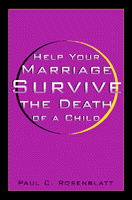

<body bgcolor="#FFFFFF" text="#000000" link="#0000FF" vlink="#CC0000" alink="#CC0000"><center><hr width="350" size="1" align="center" noshade>Advice to couples and counselors about how to deal with the death of a child<hr width="350" size="1" align="center" noshade><p><a href="https://cdcshoppingcart.uchicago.edu/Cart/ChicagoBook.aspx?ISBN=9781566398046&&PRESS=temple" target="_top">Buy this book!</a> | <a href="https://cdcshoppingcart.uchicago.edu/Cart/Cart.aspx?PRESS=temple" target="_top">View Cart</a> | <a href="https://cdcshoppingcart.uchicago.edu/Cart/Cart.aspx?PRESS=temple" target="_top">Check Out</a></p><p></p></center><!--none//--><h1>Help Your Marriage Survive the Death of a Child</h1>
<h3>Paul C. Rosenblatt</h3>
<P>cloth 1-56639-804-5 $65.50, Oct 00, <FONT COLOR=#990033>Available</FONT>
<br>paper 1-56639-805-3 $28.95, Oct 00, <FONT COLOR=#990033>Available</FONT>
<br>Electronic Book 1-43990-534-7 $28.95 <FONT COLOR=#990033>Available</FONT>
<BR> 200 pp
5.5x8.25
</P><BLOCKQUOTE><I>"This book will be a useful tool for couples struggling to hang on to their marriage. As a bereaved parent, I know well the depths of despair and the painful struggle to keep a relationship alive when everything around you has fallen apart. How I wish </I>Help Your Marriage Survive the Death of a Child<I> had been written 24 years ago when my husband and I needed it so desperately! We did manage to survive, but this book would certainly have eased some of the panic, confusion, despair we experienced along the way to healing."</I>
<br>&#151<b>Darcie D. Sims</b>, Ph.D., President, Grief, Inc., and author of <I>Why Are the Casseroles Always Tuna?</I><I></I></BLOCKQUOTE>
<p>Many parents who have experienced the death of a child struggle with painful and at times overwhelming marital problems. Grieving can create great marital distance, and it can magnify those problems that existed before the child's death. Grieving parents often fear that divorce is a real possibility. This book can help.
<p>Based on intensive interviews of 29 couples who experienced the death of a child, this book offers perspectives and advice on common marital problems experienced by bereaved parents. Each couple's problems are unique, but often the problems are connected to couple communication, sexuality, parenting of other children, the use of alcohol and drugs, blaming, and differences in such areas as whether to have another child, how to grieve, how to talk about the child who died, whether to go outside the marriage for support, and what to do with things and spaces that were the child's.
<p>Although the book deals with pain and marital distress, it offers a message of hope. Grieving parents can and do get through the hard times, based on respect for differences, mutual understanding, and shared history.
<BR>&nbsp;<h2>Excerpt</h2><P>Excerpt available at <a href="http://www.temple.edu/tempress">www.temple.edu/tempress</a></p>
<BR>&nbsp;<h2>Reviews</h2>
<p><I>"Rosenblatt combines the wisdom accumulated from his distinguished career in marriage and family studies and the practical experience of couples whose children have died. He teaches without being pedantic, guides without being directive. This book will help bereaved couples understand stresses their child's death puts on each of them and on their marriage. And the book provides tools and insights couples can use as they rebuild their lives and families in a world that changed forever the day their child died."</I>
<br>&#151<b>Dennis Klass</b>, Ph.D., Webster University, St. Louis, and author of <I>The Spiritual Lives of Bereaved Parents</I>
<p><I>"</I>Help Your Marriage Survive the Death of a Child<I> is an important contribution to the literature. Aimed as it is at grieving parents themselves, rather than a professional audience, the book contains a minimum of theory, and much practical information. Rosenblatt addresses the uniqueness of each grieving person, and the unique relationship of each couple. He speaks about the usual problems that grieving parents face&#51financial, emotional, gender differences, religious and sexual&#151stressing the importance of loving patience when couples grieve in different manners and at different times. The book offers suggestions, while a the same time honoring the 'do-it-yourselfness' of the grieving process. While the book has a target audience of grieving persons themselves, it is also valuable for professionals who are looking for concrete suggestions to give to clients, as well as an important addition to the libraries of counseling centers and support groups."</I>
<br>&#151<b>John D. Morgan</b>, Ph.D., Professor Emeritus, Philosophy, and Coordinator, King's College Centre for Education about Death and Bereavement
<p><i>"This book offers a very readable account of the parents' experiences of loss.... [it] will prove helpful as an easily-accessible reading resource for bereaved couples that can be used to help raise questions and issues in counseling, and to help direct counseling therapies."</i>
<br>&#151<b><i>Journal of Family Studies</i></b>
<BR>&nbsp;<h2>Contents</h2><P>
<p>Acknowledgments
<br>1. "It’s the Hardest Thing We Ever Had to Go Through"
<br>2. Deciding to Survive as a Couple
<br>3. How a Person Grieves
<br>4. Two People Always Grieve Differently
<br>5. Grief Can Make Marital Trouble
<br>6. "The Sexual Part of Our Relationship Died"
<br>7. Money
<br>8. Talk
<br>9. Friends, Relatives, and Coworkers
<br>10. Support Groups and Counseling
<br>11. "Medicating"
<br>12. Depression and Your Marriage
<br>13. Your Couple Relationship with Your Child Who Died
<br>14. Birthing or Adopting Another Child
<br>15. Parenting Together after a Child Dies
<br>16. Staying Together and Getting Along
<br>Appendix: The Couples and Their Children Who Died
<br>Index
</P><BR>&nbsp;<H2>About the Author(s)</H2>
<table><tr><td valign="top"><img src="/tempress/authors/1549_au.gif" height="90" width="75"></td><td width="100%" valign="middle"><p> <B>Paul C. Rosenblatt</B> is Morse Alumni Distinguished Teaching Professor of Family Social Science at the University of Minnesota. He was the founder of the Grief and Families Focus Group of the National Council on Family Relations. Rosenblatt was the keynote speaker at the First International Congress on Death and Dying in London and has been elected to membership in the prestigious International Work Group on Death, Dying, and Bereavement.</P></td></tr></table>
<BR><H2>Subject Categories</H2>
<p><A HREF="/tempress/family.html" TARGET="_top">Family Policy</a>
<BR><A HREF="/tempress/psycho.html" TARGET="_top">Psychology</a>
</p>
<p align="center"><a href="https://cdcshoppingcart.uchicago.edu/Cart/ChicagoBook.aspx?ISBN=9781566398046&&PRESS=temple" target="_top">Buy this book!</a> | <a href="https://cdcshoppingcart.uchicago.edu/Cart/Cart.aspx?PRESS=temple" target="_top">View Cart</a> | <a href="https://cdcshoppingcart.uchicago.edu/Cart/Cart.aspx?PRESS=temple" target="_top">Check Out</a></p><p><font face="Arial" size="1"><a href="copyright.html" onMouseOver="window.status='Web Copyright Policy';return true;" onMouseOut="window.status=''" title="Web Copyright Policy">&copy;</a> 2015 <a href="http://www.temple.edu" target="new" onMouseOver="window.status='Link to Temple University home page';return true;" onMouseOut="window.status=''" title="Link to Temple University home page">Temple University</a>. All Rights Reserved. http://www.temple.edu/tempress/titles/1549_reg.html</font></p>